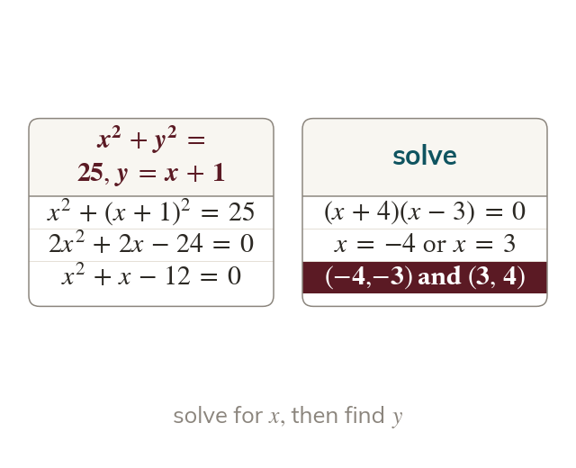
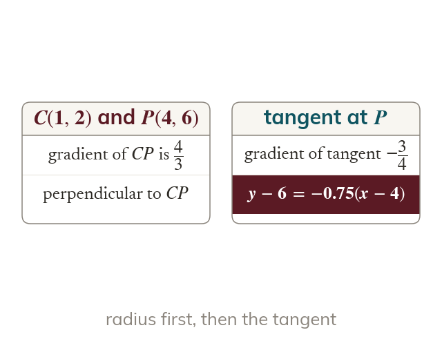
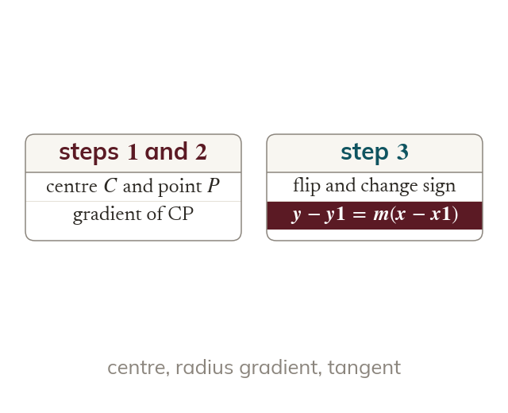

Counting intersections
Substitute the line into the circle to get a quadratic in x. Its discriminant tells you how many points there are: two, one (a tangent) or none.
A line meets a circle in two points, one point or none, and substitution plus the discriminant decides which; a tangent is the special case that touches once, at right angles to the radius.
Work down the page at your own pace. Write every answer in your book first, then click to check it.
Read each card, then follow the worked examples one step at a time.
Substitute the line into the circle to get a quadratic in x. Its discriminant tells you how many points there are: two, one (a tangent) or none.

Each root for gives its own point. Here and give and
Pick an answer. If it's wrong, the feedback tells you which mistake it was.
Section Equation of a circle Exercise questions that find the intersection of a line and a circle.
Read each card, then follow the worked examples one step at a time.

A tangent meets the radius at the point of contact at a right angle. So the tangent gradient is the negative reciprocal of the gradient of the radius.

Find the gradient of the radius from the centre to the point. Flip it and change the sign, and then write the line through the point.
Pick an answer. If it's wrong, the feedback tells you which mistake it was.
Section Equation of a circle Exercise questions that find the equation of a tangent to a circle at a given point.
Finished? Next lesson: 6.1-6.3-6.4 Circle Theorems.
Log in, then search for a code to practise that skill.